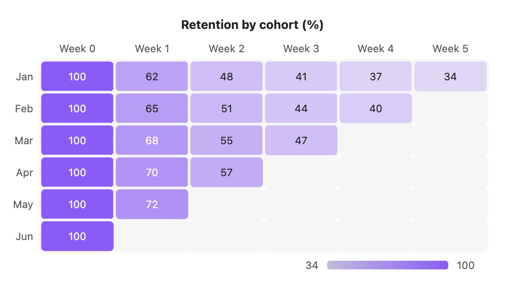
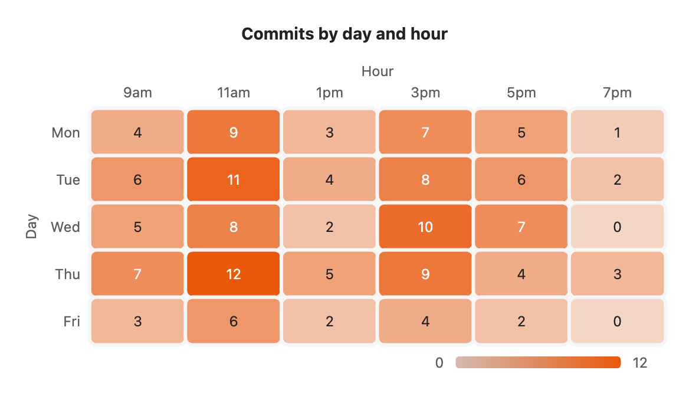

Heatmap
A heatmap is a grid of cells shaded by value: the bigger the number, the stronger the colour. The value is printed in each cell, and a scale under the chart shows the lowest and highest.

```s-chart
type: heatmap
title: Retention by cohort (%)
---
| Cohort | Week 0 | Week 1 | Week 2 | Week 3 | Week 4 | Week 5 |
| ------ | ------ | ------ | ------ | ------ | ------ | ------ |
| Jan | 100 | 62 | 48 | 41 | 37 | 34 |
| Feb | 100 | 65 | 51 | 44 | 40 | |
| Mar | 100 | 68 | 55 | 47 | | |
| Apr | 100 | 70 | 57 | | | |
| May | 100 | 72 | | | | |
| Jun | 100 | | | | | |
```When to use it
Use a heatmap when both the rows and the columns mean something and you want to spot patterns across the grid. Cohort retention, activity by day and hour, and scores by person and topic all fit. To compare a few totals, a bar chart is easier to read.
How the table maps
Each table row is a row of cells, labelled by its first column, in the order you wrote them. Each other column is a column of cells, labelled by its header. In the example above, Jan to Jun are the rows and Week 0 to Week 5 are the columns.
Leave a cell empty to show a blank. Empty cells are drawn faintly, so the grid keeps its shape. A 0 is a real value and gets the lightest shade.
Options
| Option | On a heatmap |
|---|---|
type: heatmap | Required. |
title | Text above the chart. |
x-label | Title above the column headers. |
y-label | Title beside the row labels. |
height | Chart height in pixels, 120 to 1200. Cells grow to fill it. |
colors | The first colour shades every cell. Other colours are ignored. |
palette | A palette from settings. Its first colour is used. |
source, x, y | Draw from note properties: one row per note, one column per property in y. |
stacked, horizontal and legend have no effect. The scale under the chart takes the place of a legend.
Your own colour
By default the cells use your theme's accent colour. Set colors to pick another. Cells run from a faint tint for the lowest value to the full colour for the highest.

```s-chart
type: heatmap
title: Commits by day and hour
colors: #ea580c
x-label: Hour
y-label: Day
---
| Day | 9am | 11am | 1pm | 3pm | 5pm | 7pm |
| --- | --- | ---- | --- | --- | --- | --- |
| Mon | 4 | 9 | 3 | 7 | 5 | 1 |
| Tue | 6 | 11 | 4 | 8 | 6 | 2 |
| Wed | 5 | 8 | 2 | 10 | 7 | 0 |
| Thu | 7 | 12 | 5 | 9 | 4 | 3 |
| Fri | 3 | 6 | 2 | 4 | 2 | 0 |
```